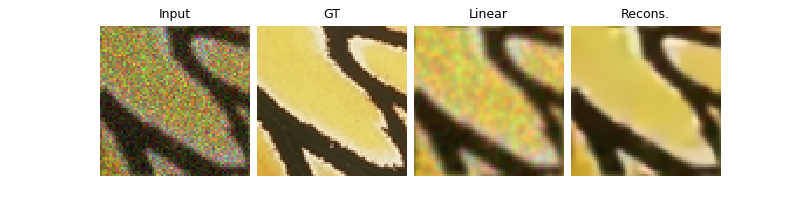
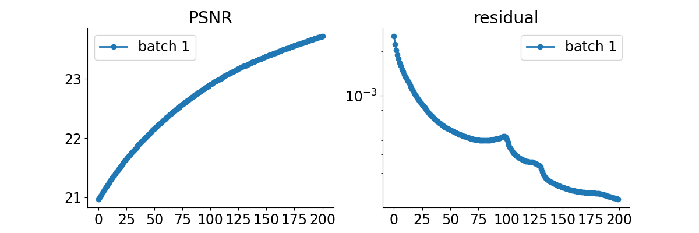

Note
Go to the end to download the full example code.
Plug-and-Play algorithm with Mirror Descent for Poisson noise inverse problems.
This is a simple example to show how to use a mirror descent algorithm for solving an inverse problem with Poisson noise.
The Mirror descent with RED denoiser writes
where \(\phi\) is a convex Bergman potential, \(\distance{A(x)}{y}\) is the data fidelity term and \(D_\sigma(x)\) is a denoiser.
In this example, we use the DnCNN denoiser. As the observation has been corrupted with Poisson noise, we use the deepinv.optim.PoissonLikelihood data-fidelity term.
In https://publications.ut-capitole.fr/id/eprint/25852/1/25852.pdf, it is shown that, with this data-fidelity term, the right Bregman potential to use is Burg’s entropy deepinv.optim.bregman.BurgEntropy.
import deepinv as dinv
from pathlib import Path
import torch
from torch.utils.data import DataLoader
from deepinv.optim.data_fidelity import PoissonLikelihood
from deepinv.optim.prior import RED
from deepinv.optim import optim_builder
from deepinv.optim.bregman import BurgEntropy
from deepinv.utils.demo import load_url_image, get_image_url
from deepinv.utils.plotting import plot, plot_curves
Setup paths for data loading and results.
BASE_DIR = Path(".")
ORIGINAL_DATA_DIR = BASE_DIR / "datasets"
DATA_DIR = BASE_DIR / "measurements"
RESULTS_DIR = BASE_DIR / "results"
CKPT_DIR = BASE_DIR / "ckpts"
# Set the global random seed from pytorch to ensure reproducibility of the example.
torch.manual_seed(0)
img_size = 64
device = dinv.utils.get_freer_gpu() if torch.cuda.is_available() else "cpu"
url = get_image_url("butterfly.png")
x_true = load_url_image(url=url, img_size=img_size).to(device)
x = x_true.clone()
n_channels = 3 # 3 for color images, 1 for gray-scale images
operation = "deblurring"
# Degradation parameters
noise_level_img = 1 / 40 # Poisson Noise gain
# Generate the gaussian blur operator with Poisson noise.
physics = dinv.physics.BlurFFT(
img_size=(n_channels, img_size, img_size),
filter=dinv.physics.blur.gaussian_blur(),
device=device,
noise_model=dinv.physics.PoissonNoise(gain=noise_level_img),
)
Define the PnP algorithm.
The chosen algorithm is here MD (Mirror Descent).
# Select the data fidelity term, here Poisson likelihood due to the use of Poisson noise in the forward operator.
data_fidelity = PoissonLikelihood(gain=noise_level_img)
# Set up the denoising prior. Note that we use a Gaussian noise denoiser, even if the observation noise is Poisson.
prior = RED(denoiser=dinv.models.DnCNN(depth=20, pretrained="download").to(device))
# Set up the optimization parameters
max_iter = 200 # number of iterations
stepsize = 1.0 # stepsize of the algorithm
sigma_denoiser = 0.05 # noise level parameter of the Gaussian denoiser
params_algo = { # wrap all the restoration parameters in a 'params_algo' dictionary. In particular, this is here that we define the bregman potential used in the mirror descent algorithm.
"stepsize": stepsize,
"g_param": sigma_denoiser,
}
# Logging parameters
verbose = True
# Define the unfolded trainable model.
model = optim_builder(
iteration="MD",
prior=prior,
data_fidelity=data_fidelity,
early_stop=True,
max_iter=max_iter,
verbose=verbose,
params_algo=params_algo,
bregman_potential=BurgEntropy(),
)
Evaluate the model on the problem and plot the results.
The model returns the output and the metrics computed along the iterations.
For computing PSNR, the ground truth image x_gt must be provided.
y = physics(x)
x_lin = physics.A_adjoint(y)
# run the model on the problem.
with torch.no_grad():
x_model, metrics = model(
y, physics, x_gt=x, compute_metrics=True
) # reconstruction with PnP algorithm
# compute PSNR
print(f"Linear reconstruction PSNR: {dinv.metric.PSNR()(x, x_lin).item():.2f} dB")
print(f"PnP reconstruction PSNR: {dinv.metric.PSNR()(x, x_model).item():.2f} dB")
# plot images. Images are saved in RESULTS_DIR.
imgs = [y, x, x_lin, x_model]
plot(
imgs,
titles=["Input", "GT", "Linear", "Recons."],
save_dir=RESULTS_DIR / "images",
show=True,
)
# plot convergence curves. Metrics are saved in RESULTS_DIR.
plot_curves(metrics, save_dir=RESULTS_DIR / "curves", show=True)
- 
- 
Linear reconstruction PSNR: 20.97 dB
PnP reconstruction PSNR: 23.72 dB
Total running time of the script: (0 minutes 7.773 seconds)